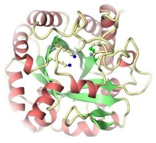
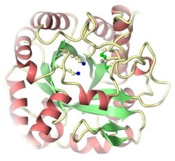

Some forthcoming meetings
BCA
Spring Meeting, “Crystallography @ 100: Looking to the
future,
learning
from the past”, University
of Loughborough, 7 - 10 April 2014.

The aim of this page is to provide links to the biological crystallography groups in the UK, the main european facilities, forthcoming meetings and courses, suppliers, employment opportunities and specialised or generally useful software.
All constructive suggestions for improvement are very welcome indeed and please let me know what you would like to see in this page!
No thrills warning: the format of this page is basic.


 
